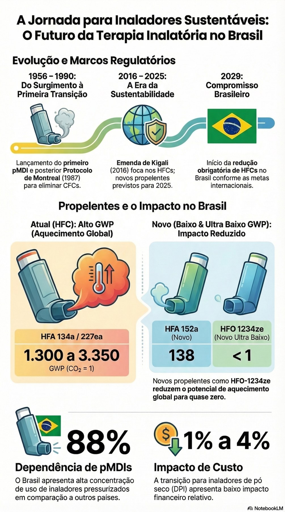

A jornada para inaladores sustentáveis: o futuro da terapia inalatória no Brasil

Ler o texto do infográfico
Evolução e marcos regulatórios
- 1956 a 1990: lançamento do primeiro pMDI e, depois, Protocolo de Montreal (1987) para eliminar CFCs.
- 2016 a 2025: Emenda de Kigali (2016), com foco nos HFCs; novos propelentes previstos para 2025.
- 2029: início da redução obrigatória de HFCs no Brasil, conforme as metas internacionais.
Propelentes e o impacto no Brasil
- Atuais (HFC), HFA 134a / 227ea: GWP de 1.300 a 3.350 (CO₂ = 1).
- Novo, HFA 152a: GWP 138.
- Novo ultrabaixo, HFO 1234ze: GWP menor que 1. Reduz o potencial de aquecimento global para quase zero.
- 88% de dependência de pMDIs: o Brasil tem alta concentração de uso de inaladores pressurizados em comparação a outros países.
- Impacto de custo de 1% a 4%: a transição para inaladores de pó seco (DPI) tem baixo impacto financeiro relativo.